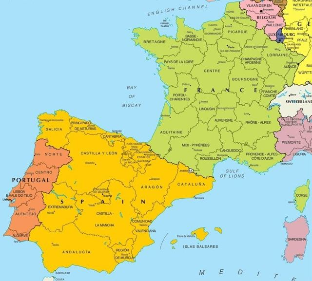
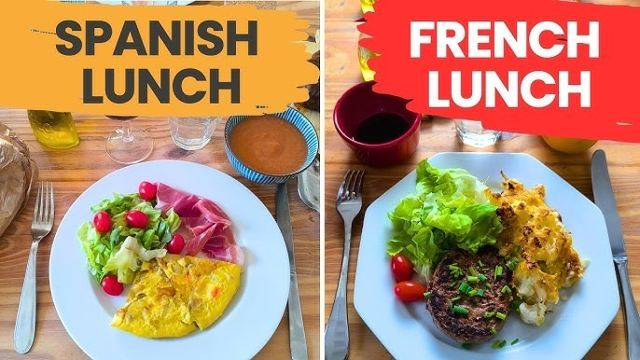
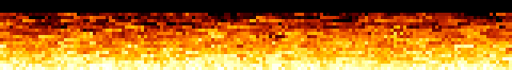
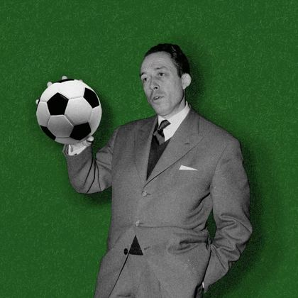
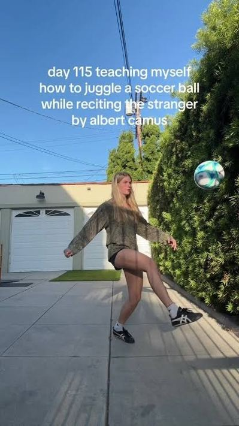
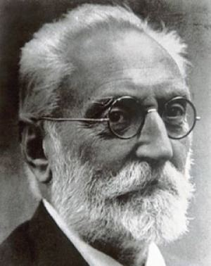
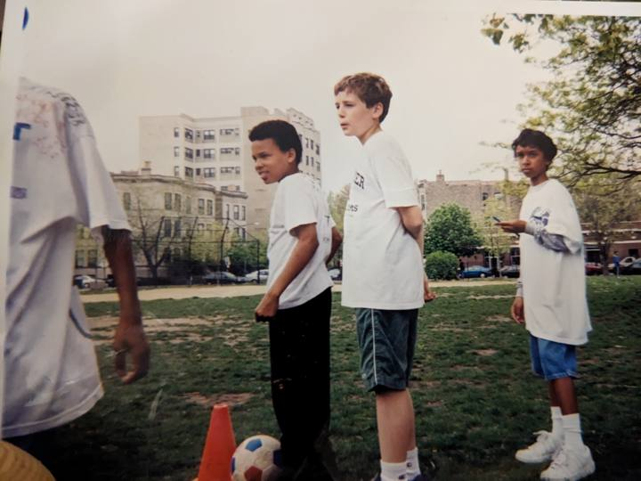
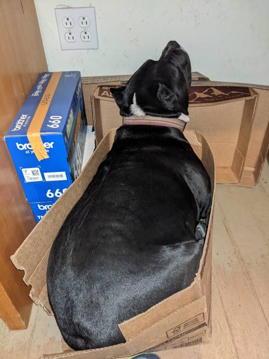
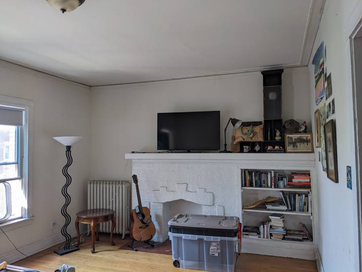
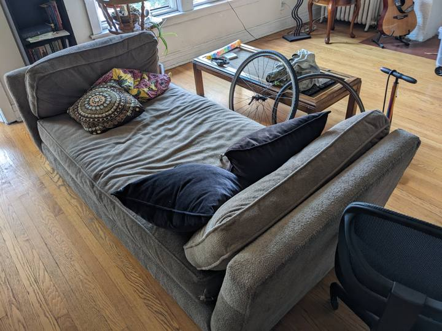

☀️ YES it will be hot. NO we will not be stopped. ☀️
Friends, Romans, remote workers: history rarely knocks twice, and tomorrow it kicks off at two. Spain and France — the two best footballing nations currently drawing breath — meet in a so-called semifinal, which is like calling the sun a medium-sized lamp. Whatever happens in the actual final will be an epilogue. This is the match. And it is happening, conveniently, on Bastille Day, because France has never once resisted the urge to be dramatic on July 14th.
The principals, at their previous meeting (Euro 2024). Tomorrow, the argument resumes.



| QUOI | España vs France — World Cup semifinal, a.k.a. the final, arriving early to beat traffic. |
|---|---|
| QUAND | TOMORROW — Tuesday, July 14th — 2:00 PM (pregame murmuring and beverage assignment from 1:30). |
| DÓNDE | Casa Cathey. You know the one. The couch remembers you. If you genuinely don't know where I live, reply to the invite and confess. |
| APPORTEZ | Your laptop. It is a Tuesday. It is 2 PM. Ask no further questions and none shall be asked of you. Your Slack dot will glow a serene, plausible green while your soul is in Dallas. WiFi provided. Alibis provided. Excel may be open in a small window. This is between you and your gods. |
| DRESS CODE | Rojo, amarillo, bleu, blanc — or pajamas, we're not the UN. |
--:--:--:--
days : hours : minutes : seconds until the earth briefly stops rotating
There is no central air. There was never central air. Central air is, like the true World Cup final, a beautiful idea that lives elsewhere. HOWEVER, your comfort delegation includes:
We know who you are. You are "slammed." You have "a deliverable." You were planning to "catch the highlights." This section was written for you, with love, by the Subcommittee on Seizing the Day.
"I have meetings."
The couch supports video. The wall behind it is beige and tells no tales. You will be muted, hydrated, and morally supported. If you must say "circle back," say it during a throw-in.
"I'm swamped."
The work will still be there at 5:00. Lamine Yamal will be nineteen for exactly one year, and Spain meets France in a World Cup knockout approximately once per papacy.
"I'll just watch the replay tonight."
No one in recorded history has watched the replay. You will know the score by 4:15 whether you like it or not — the push alerts hunt us all. Live is history. The replay is homework.
"Is this irresponsible?"
Camus kept goal. Unamuno kept vigil. You will keep your laptop open. Everyone here is, in the eyes of the law and the LDAP directory, at work.
"What if someone asks what I did Tuesday afternoon?"
"Cross-functional offsite. High engagement. Several action items were shouted at a television."
YOUR DOT: GREEN · YOUR HEART: FULL · YOUR ALIBI: AIRTIGHT
The bearer, , is hereby excused from visible ambition between the hours of 1:30 PM and full-time (extra time and penalties included, si Dieu le veut), for reasons of historical necessity.
This indulgence is recognized by no institution and honored by all right-thinking people.
— The Subcommittee on Seizing the Day (est. also 1789)
One of these men will break our hearts. The other will also break our hearts, differently. Attendance mandatory for proper heartbreak distribution.

«Tout ce que je sais de plus sûr à propos de la moralité et des obligations des hommes, c'est au football que je le dois.» "All that I know most surely about morality and the obligations of men, I owe to football." — Albert Camus, goalkeeper first, Nobel laureate as a fallback plan (hover for the English — the meaning, like a well-struck ball, arrives a beat after the touch)

A las dos de la tarde.
Eran las dos en punto de la tarde.
Un sofá ya estaba dispuesto,
a las dos de la tarde.
Lo demás era calor y solamente calor,
a las dos de la tarde. At two in the afternoon.
It was two o'clock sharp in the afternoon.
A couch was already laid out,
at two in the afternoon.
The rest was heat and only heat,
at two in the afternoon. — after Federico García Lorca, Llanto, lightly rescheduled from five o'clock and moved indoors, with apologies to Andalusia (rest your cursor upon the poem for the English — hover, the way a doubtful referee hovers over the monitor)

Unamuno wrote of the tragic sense of life — the ache of wanting something eternal while knowing nothing is. He was describing, with eerie precision, supporting a national team in a knockout round. Come feel infinite for ninety minutes plus stoppage. — Miguel de Unamuno, paraphrased beyond what he'd tolerate
(all exhibits authenticated by the Subcommittee; no touch-ups, no VAR)




Sharp-eyed viewers of Exhibit C may spot a window unit at far left. The medical, it seems, went well. HERE WE GO.
Both buttons mean yes. There is no button for no. This is by design.
or just text me like a normal person, which none of us are
You are visitor № 0000000 to this page.
counter certified accurate by the same officials reviewing the offside
Best viewed in Netscape Navigator 4.0 at 800×600 through a beaded curtain.
Background music (Boléro.mid, 4.2 MB) removed on the advice of counsel.
No cookies on this site except, potentially, physical ones.
⟵ return to the regularly scheduled portfolio of Paul Cathey